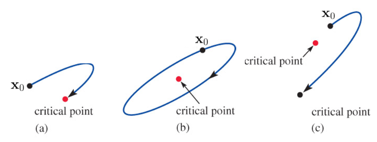

Notice that the independent variable \(t\) does not appear explicitly on the right-hand side of each differential equation
Second-Order DE as a System
Any second-order differential equation \(x''=g(x,x')\) can be written as an autonomous system. If we let \(y=x'\), the second-order differential equation becomes the system of two first-order equations
If \(P\), \(Q\), and the first-order partial derivatives \(\partial P/\partial x\), \(\partial P/\partial y\), \(\partial Q/\partial x\), and \(\partial Q/\partial y\) are continuous in a region \(R\) of the plane, then a solution to the plane autonomous system that satisfies \(\mathbf{x}(0)=\mathbf{x}_0\) is unique and one of three basic types:
A constant solution, \(\mathbf{x}(t)=\mathbf{x}_0\) for all \(t\). A constant solution is called a critical or stationary point
If \(\mathbf{x}_1\) is a critical point of a plane autonomous system and \(\mathbf{x}=\mathbf{x}(t)\) is a solution satisfying \(\mathbf{x}(0)=\mathbf{x}_0\), when \(\mathbf{x}_0\) is placed near \(\mathbf{x}_1\)

It may return to the critical point
It may remain close to the critical point without returning
It may move away from the critical point
Stability Analysis
A careful geometric analysis of the solutions to the linear plane autonomous system
in terms of the eigenvalues and eigenvectors of the coefficient matrix
\[\mathbf{A}=
\begin{pmatrix}
a & b\\
c & d
\end{pmatrix}
\]
drives the stabilty analysis
To ensure that \(\mathbf{x}_0=(0,\,0)\) is the only critical point, we will assume that the determinant \(\Delta = ad -bc \neq 0\). If \(\tau = a + d\) is the trace of matrix \(\mathbf{A}\), then the characteristic equation, \(\mathrm{det}(\mathbf{A} -\lambda\mathbf{I})=0,\) can be rewritten as
in terms of \(c\), and use a numerical solver to discover the shapes of solutions corresponding to the cases \(c=\frac{1}{4}\), \(4\), \(0\), and \(-9\). \(\mathbf{A}\) has trace \(\tau=-2\) and determinant \(\Delta=1 -c\), and so the eigenvalues are
\[ \lambda =-1 \pm \sqrt{c} \]
The nature of the eigenvalues is therefore determined by the value of \(c\)
import numpy as npimport sympy as spc = sp.Symbol('c')A = sp.Matrix([[-1, 1], [c, -1]])A.eigenvects()
Both eigenvalues negative, \(\tau^2 -4\Delta > 0\), \(\tau<0\), \(\Delta>0\)
Stable Node: Since both eigenvalues are negative, it follows that \(\lim_{t \to \infty} \mathbf{x}(t)=\mathbf{0}\) in the direction of \(\mathbf{k}_1\) when \(c_1 \neq 0\) or in the direction of \(\mathbf{k}_2\) when \(c_1=0\)
Both eigenvalues positive, \(\tau^2 -4\Delta > 0\), \(\tau>0\), \(\Delta>0\)
Unstable Node:\(\mathbf{x}(t)\) becomes unbounded in the direction of \(\mathbf{k}_1\) when \(c_1 \neq 0\) or in the direction of \(\mathbf{k}_2\) when \(c_1=0\)
Eigenvalues have opposite signs, \(\tau^2 -4\Delta > 0\), \(\Delta<0\)
Saddle Point: When \(c_1=0\), \(\mathbf{x}(t)\) will approach \(\mathbf{0}\) along the line determined by \(\mathbf{k}_2\). If \(\mathbf{x}(0)\) does not lie on the line determined by \(\mathbf{k}_2\), the direction determined by \(\mathbf{k}_1\) serves as an asymtote for \(\mathbf{x}(t)\)
Example\(~\) Classify the critical point \((0,0)\) of each of the following linear system \(\mathbf{x}'=\mathbf{A}\mathbf{x}\) as either a stable node, an unstable node, or a saddle point
A Repeated Real Eigenvalue, \(\tau^2 -4\Delta = 0\)
The general solution takes on one of two different forms depending on whether one or two linearly independent eigenvectors can be found for the repeated eigenvalues \(\lambda_1\)
Two linearly independent eigenvectors
If \(\mathbf{k}_1\) and \(\mathbf{k}_2\) are two linearly independent eigenvectors corresponding to \(\lambda_1\), then the general solution is given by
If \(\lambda_1<0\), the \(\mathbf{x}(t)\) approaches \(\mathbf{0}\) along the line determined by the vector \(c_1\mathbf{k}_1 + c_2\mathbf{k}_2\) and the critical point is a degenerate stable node. The arrows are reversed when \(\lambda_1>0\), and the critical point is a degenerate unstable node
A single linearly independent eigenvectors
When only a single linearly independent eigenvector \(\mathbf{k}_{11}\) exists, the general solution is given by
where \((\mathbf{A} -\lambda_1\mathbf{I})\mathbf{k}_{12}=\mathbf{k}_{11}\). If \(\lambda_1<0\), then \(\lim_{t \to \infty} te^{\lambda_1 t}=0\) and it follows that \(\mathbf{x}(t)\) approaches \(\mathbf{0}\) in the line determined by \(\mathbf{k}_{11}\). The critical point is again a degenerate stable node. When \(\lambda_1>0\), \(\mathbf{x}(t)\) becomes unbounded as \(t\) increases, and the critical point is a degenerate unstable node
Example\(~\) Classify the critical point \((0,0)\) of each of the following linear system \(\mathbf{x}'=\mathbf{A}\mathbf{x}\)
If \(\lambda_1=\alpha +i\beta\) and \(\bar{\lambda}_1\) are the complex eigenvalues and \(\mathbf{k}_1=\mathbf{b}_1 +i\mathbf{b}_2\) is a complex eigenvector corresponding to \(\lambda_1\), the general solution can be written as \(\mathbf{x}=c_1\mathbf{x}_1 +c_2\mathbf{x}_2\)
\[
\begin{aligned}
\mathbf{x}_1(t) &=e^{\alpha t}\left(\mathbf{b}_1\cos\beta t -\mathbf{b}_2\sin\beta t\right) \\
\mathbf{x}_2(t) &=e^{\alpha t}\left(\mathbf{b}_2\cos\beta t +\mathbf{b}_1\sin\beta t\right)
\end{aligned}\]
Pure imaginary roots, \(\tau^2 -4\Delta < 0\), \(~\tau=0\)
Center: When \(\alpha=0\), all solutions are ellipses with center at the origin and are periodic with period \(p=2\pi/\beta\). The critical point is called a center
Nonezero real part, \(\tau^2 -4\Delta < 0\), \(~\tau\neq 0\)
Spiral Point: When \(\alpha<0\), \(e^{\alpha t}\to 0\), and the elliptical-like solution spirals closer and closer to the origin. The critical point is called a stable spiral point. When \(\alpha>0\), the effect is the opposite. An elliptical-like solution is driven farther and farther from the origin, and the critical point is now called an unstable spiral point
Example\(~\) Classify the critical point \((0,0)\) of each of the following linear system \(\mathbf{x}'=\mathbf{A}\mathbf{x}\)
For a linear plane autonomous system \(\mathbf{x}'=\mathbf{A}\mathbf{x}\) with \(\mathrm{det}\,\mathbf{A}\neq 0\), let \(\mathbf{x}\) denote the solution that satisfies the initial condition \(\mathbf{x}(0)=\mathbf{x}_0\), where \(\mathbf{x}_0\neq\mathbf{0}\)
\(\lim_{t \to \infty}\mathbf{x}(t)=\mathbf{0}\) if and only if the eigenvalues of \(\mathbf{A}\) have negative real parts. This will occur when \(\Delta>0\) and \(\tau<0\)
\(\mathbf{x}(t)\) is periodic if and only if the eigenvalues of \(\mathbf{A}\) are pure imaginary. This will occur when \(\Delta>0\) and \(\tau=0\)
In all other cases, given any neighborhood of the origin, there is at least one \(\mathbf{x}_0\) in the neighborhood for which \(\mathbf{x}(t)\) becomes unbounded as \(t\) increases
8.3 Linearization and Local Stability
Here we will use linearization as a means of analyzing nonlinear DEs and nonlinear systems; the idea is to replace them by linear DEs and linear systems. Let \(\mathbf{x}_1\) be a critical point of an autonomous system, and let \(\mathbf{x}=\mathbf{x}(t)\) denote the solution that satisfies the initial condition \(\mathbf{x}(0)=\mathbf{x}_0\), where \(\mathbf{x}\neq\mathbf{x}_1\).
\(\mathbf{x}_1\) is a stable critical point
when, given any \(\rho > 0\), there is a \(r>0\) such that if \(\mathbf{x}_0\) satisfies \(|\mathbf{x}_0 -\mathbf{x}_1|<r\), then \(\mathbf{x}(t)\) satisfies \(|\mathbf{x}(t) -\mathbf{x}_1|<\rho\)\(\,\) for all \(t>0\). If, in addition, \(\lim_{t \to \infty} \mathbf{x}(t)=\mathbf{x}_1\) whenever \(|\mathbf{x}_0 -\mathbf{x}_1|<r\), we call \(\mathbf{x}_1\) an asymptotically stable critical point
\(\mathbf{x}_1\) is a unstable critical point
if there is \(\rho>0\) with the property that, for any \(r>0\), there is at least one \(\mathbf{x}_0\) that satisfies \(|\mathbf{x}_0 -\mathbf{x}_1|<r\), yet the corresponding solution \(\mathbf{x}(t)\) satisfies \(|\mathbf{x}(t) -\mathbf{x}_1|\geq\rho\)\(\,\) for at least one \(t>0\)